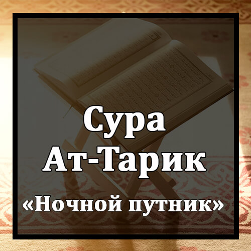

Бисмилляхир-Рахманир-Рахиим
Во имя Аллаха Милостивого и Милосердного!
Уас-Сама`и Уат-Тариик.
Клянусь небом и ночным путником!
Уа Ма Адрака Мат-Тариик.
Откуда ты мог знать, что такое ночной путник?
Ан-Наджмус-Сакииб.
Это - звезда пронизывающая небеса своим светом.
Ин Куллю Нафсин Лямма `Алейха Хафииз.
Нет души, при которой не было бы хранителя.
Фальйанзуриль-Инсану Мимма Хулиик.
Пусть посмотрит человек, из чего он создан.
Хулика Мин Ма`ин Дафиик.
Он создан из изливающейся жидкости,
Йахруджу Мин Байнис-Сульби Уат-Тара`ииб.
которая выходит между чреслами и грудными костями.
Иннаху `Аля Радж`ихи Лякадиир.
Воистину, Он властен вернуть его.
Йаума Тубляс-Сара`иир.
В тот день подвергнут испытанию все тайны,
Фама Ляху Мин Куватин Уа Ля Насыыр.
и тогда не будет у него ни силы, ни помощника.
Уас-Сама`и Затир-Радж`.
Клянусь возобновляющим дожди небом!
Уаль-Арды Затис-Сад`.
Клянусь раскалываемой землей!
Иннаху Лякаулюн Фасль.
Это - Слово различающее,
Уа Ма Хуа Биль-Хазль.
а не шутка.
Иннахум Йакидуна Кайдаа.
Они замышляют козни,
Уа Акиду Кайдаа.
и Я замышляю козни.
Фамахилиль-Кафирина Амхильхум Рувайдаа.
Предоставь же неверующим отсрочку, помедли с ними недолго!